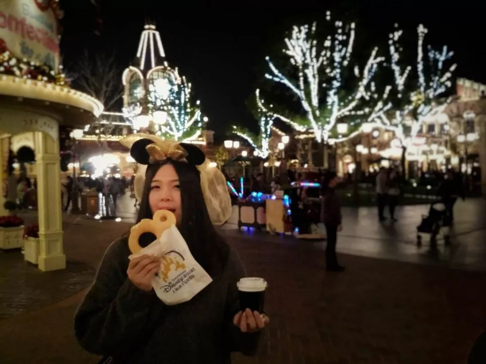
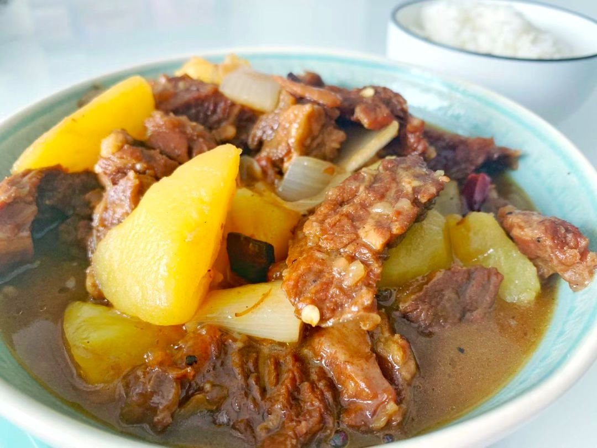
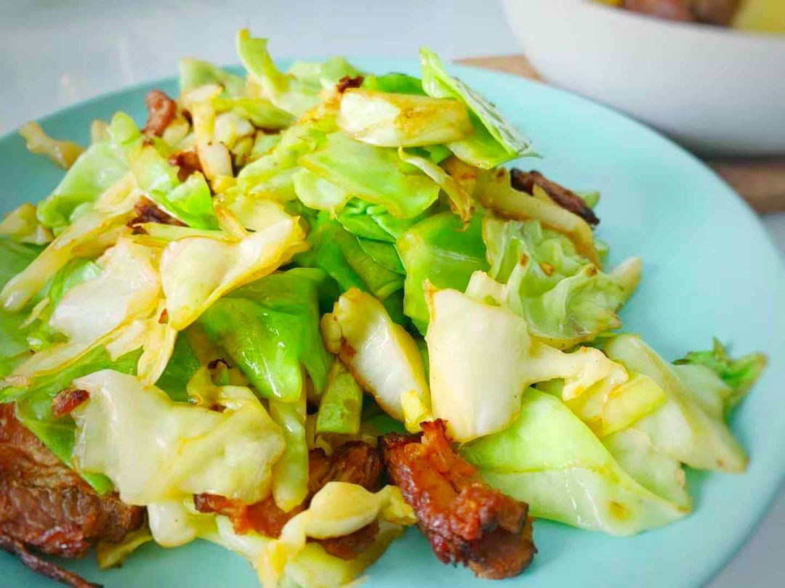

2020武汉除夕夜：危机、亲情、祈祷 | 三明治持续更新中
原文链接 备份链接 你怀着怎样的心情，度过了2020年的大年夜？ 在得知武汉封城的新闻后，三明治紧急发起了每日书特别版《武汉日常》，邀请人在武汉和家乡在武汉的朋友，一起来用文字忠实记录他们在这个特殊时期的生活日常。 招募一经发出，就有近百 …

作者：安格
坐标：湖北武汉
职业：自由职业者
1
武汉的天还是灰蒙蒙的，连带着远处的楼房都好像笼罩了一层薄纱。从33楼往下看去，整个城市仿佛停滞一般，没有车，没有人，只有灰色的雾霾笼罩下来，静止了时间。
当生活局限在一个密闭的空间里后，许多事情变得简单起来。睡觉和吃饭分隔了一整天的时间，因为没有别的重要的事情要做。
漫长的睡眠后，是做早饭、吃早饭、洗碗，中间的事情记不清了，但到了时间便要开始做中饭，吃中饭，重复这样的过程。吃完晚饭快9点了。不过才9点，已经觉得这一天快要结束了。
关于这场肺炎的战争，关于武汉市限行，关于武汉周边小城市乃至国内有哪些其他城市开始封城，这些消息也不会像最开始那样，让人觉得恐慌了。疫情地图上增长的数字终于变成了数字本身，湖北依旧是地图中那块近乎酱色的区域。
在朋友圈里转发着各种信息，微信里联系着各种能提供资源的人，拼命地想要有一份参与感，关在牢笼里却总想要付出点什么，我们所拥有但别人没有的。
或许对一线的工作人员来说，能够自己做饭洗碗，就已经是一种奢侈了吧。
沉重完了，下面来点轻松的：
试问，人与人之间的差异化在什么时候会觉得特别大？大概是无所事事又不得不待在一起的时候吧。
一场突如其来的自我隔离，让我和阿欢不得不第一次尝试24小时吃喝拉撒都捆绑在一起，且不知这样的生活何时能结束。哪怕我从一开始就明白我和阿欢的差异，但真正经历起来还是觉得“非常需要磨合”。
生活习惯差异就不一一列举了，因为实在是太多。比如我习惯晚上洗澡，阿欢习惯早上洗澡；我做完饭喜欢顺手把台面收拾一下，吃完饭也习惯立刻把碗碟收进厨房，阿欢却习惯在吃完后很久不得不动弹的时候再收拾…就连做个饭也可以挑出几百个不同，我嫌阿欢炒的东西太干，他嫌我切的东西太厚，诸如此类。
但最可怕的不是生活习惯，而是思想上的差异。
我是一个，说好听了叫做“未雨绸缪”，说难听了就是“容易神经紧张”的人。阿欢却很心大，用法语说就是“vive la moment”活在当下。于是在武汉还未封市前，我就已经开始在家里囤积粮食。封市后的几天我也因为酒精不够或是家里补给不足而焦躁万分。而阿欢全然没有察觉，有什么吃什么，一点也不会为还未发生的事情发愁。
这样的不同，就让我们在我们在做饭食材的安排上产生了巨大的分歧。如果是我做饭，那么怎么把剩下的食物和临期的食材用掉是最大的目标。
2
在大年初一的早上，我们吃了用前一天剩下的米饭炒的蛋炒饭，为了开源节流，一大锅米饭我只用了一个鸡蛋和一根腊肠，但加了不少不用就要坏掉的叶菜和洋葱。
同天晚上，阿欢受不了我的“拮据”，接替了做饭任务，豪气地把冰箱里所有存着的五花肉都卤了，（全然不顾我心里早已盘算好一部分拿来炒一部分拿来红烧），还在我强烈要求把快要坏掉的黄瓜用掉时，直接磕了两颗蛋做了一道黄瓜炒蛋。
不仅如此，他还在已经有肉的胡萝卜牛油果肉片里加了一根腊肠，这在我看来也是极大的浪费！虽然最后吃的很开心的也是我，但两个人三个菜，在现在这种封锁隔离的情况下，是完全没有必要的！
才是“隔离”的第五天，我已经和阿欢开始“两看相厌”。我不由得觉得那些个战争年代的爱情故事，大概也是距离产生的美感，霍乱时期的爱情绝不是两人关在同一间屋子里隔离就会产生的，只有 “遗憾成了终古，才会思念到了如今”。


（南瓜腊肠焖饭）
前天餐食的主题，就是消灭掉快要坏掉的南瓜。于是用南瓜和腊肠（只许用一根）做了一个南瓜腊肠焖饭。然后用20分钟去磨了豆子，做一杯手冲。隔着窗子跟我的城市干个杯，说一声加油！


但到昨天，家里的菜快没有了。哪怕已经尽量节省，家里的生鲜蔬菜还是快吃完了。
在吃的方面，阿欢比我挑剔，我是不管什么都可以往嘴里塞，只要不饿的类型。但他遇到不合口味的食物，明显就感觉没什么胃口。为了依着他的习惯，我们这几天尽量都是炒两个菜，一荤一素，哪怕这样我也可以明显感觉出他正餐没怎么吃饱，到了半夜又叫着要吃宵夜。
苦了他几天，今天特意从冷库拿出了欢爸之前送来的炖牛肉，准备做一个土豆炖牛肉。

（土豆炖牛肉）
土豆还剩两颗，我挑了上面有裂痕的丑点的那颗来炖。上次的卤五花肉还剩一块，切一半配上半颗包心菜做一个手撕包菜，剩下的半个正好晚上吃。数了数鸡蛋还剩十一颗，于是晚上可以奢侈的磕一颗来做水蒸蛋。有一颗大红薯这几天以肉眼可见的速度蔫瘪了下去，于是也切开配着饭一起蒸了。

（手撕包菜）
封城的第六天，我们的生鲜食材终于只剩下一颗大白菜、一个大土豆，还有一颗牛油果。冰箱里还有少许的冻肉，但没有蔬菜，很难凑成一盘菜。
而我们囤积了大量的主食类食材，有大概6个红薯、4根玉米、3筒面条、一袋半米、十个大馒头和一袋非常巨大的面粉。在后期不出门的情况下，我们可能要变身碳水怪物，以吃粮食为生了。这当然好过战乱时期啃树皮吃皮带，但却是我们这代所谓生在“和平年代”的娃最接近生活窘迫的时刻了。
武汉是在非常突然的情况下被封城的，基于我们的窘迫，我早早地就开始提醒其他省市的朋友囤粮食。今天在北京的妹妹一家也终于出动了，看着她们买了一堆的零食饮料还有士力架，我想我应该针对日常居家生活出一个囤粮指南。
零食只会让人发胖，在你狂吃了一天零食后，后面的几天你都只会想要好好地吃正餐，并且会越来越想念正餐。
囤粮指南如下（不考虑南北差异和个人喜好）：
原文链接 备份链接 你怀着怎样的心情，度过了2020年的大年夜？ 在得知武汉封城的新闻后，三明治紧急发起了每日书特别版《武汉日常》，邀请人在武汉和家乡在武汉的朋友，一起来用文字忠实记录他们在这个特殊时期的生活日常。 招募一经发出，就有近百 …
原文链接 备份链接 *************▲************* 四川省巴中市巴州区，一辆鄂A车牌（武汉）轿车的车窗上，贴着红岩社区加盖公章的证明，称车主无感冒发烧现象，且正在家自行隔离。 （杜茂林/图） 全文共*4201*字， …
原文链接 备份链接 据相关数据统计，春节前，有近500万人离开武汉，他们中有近30%的人离开湖北，他们或出差、或进行计划许久的旅行，或回家过年，但伴随着疫情的加剧，他们成了一群「不被欢迎的人」。 一位武汉的小学老师已经连续三年去厦门过年， …
原文链接 备份链接 【武汉特稿】围城的第五天，灯火可亲 ｜ 舒飞廉 日期:2020年01月29日 08:22:39 作者:舒飞廉 早上起来，阴天，冷，窗外鸟儿鸣叫不停。九点来钟，出门去买菜。昨天市府发布了机动车限行令，没太看明白，还是自觉 …
原文链接 备份链接 这段时间，除了关于疫情本身的讨论，一些新的话题不断加入。单读征文今天的来信，来自一位选择离开家乡的武汉人。武汉人在外省的处境令人堪忧，从直面病毒的恐慌，到遭遇歧视的愤懑，武汉人不仅是这场疫情中最直接的受害者，还成为后续 …